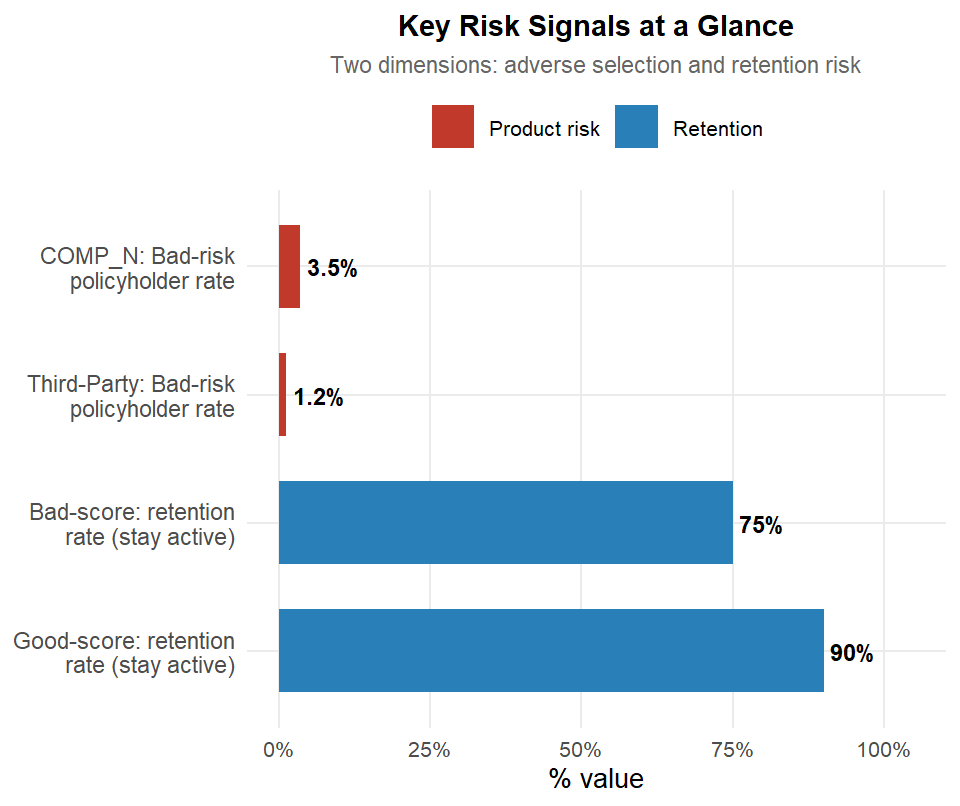
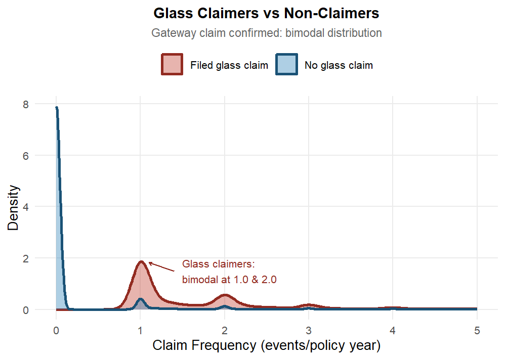
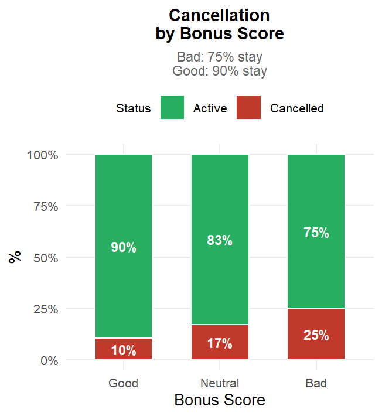

Visual Analytics for Motor Vehicle Insurance
ISSS608 Visual Analytics Individual Assignment
2026-05-15
Slide 4 | Univariate: Geographic & Vehicle Distributions


What this tells the business: The island segment, while comprising around 24,000 policies, shows much wider uncertainty bands in the loss ratio analysis (Slide 14) than other segments — reflecting greater variability in loss outcomes within that segment. Its observed loss ratio should be treated as a range estimate, not a reliable figure for pricing. Most insured vehicles are 20–25 years old on average, and the typical vehicle is worth approximately €24,700.
Slide 7 | Bivariate: Loss Ratio — Policy Type & Bonus Score


What this tells the business: Third-party policies produce the highest typical losses of all product types. COMP_N sits just above break-even on average — its profitability is marginal. Importantly, policyholders with a “Good” claims history classification generate higher typical losses than “Neutral” or “Bad” classified policyholders. This counterintuitive pattern may indicate that Good-score policies tend to cover higher-value vehicles generating larger claim costs, or that the claims history scoring system needs recalibration — either way, it warrants investigation before the score is used as a pricing input.
Slide 9 | Bivariate: Demographic Drivers


What this tells the business: Young drivers (18–25) produce the widest and most unpredictable loss outcomes — they are hard to price accurately. Middle-aged drivers (36–55) are the most stable and profitable group. The strongest single signal in the heatmap is young drivers paired with moderately aged vehicles (4–7 years) — this combination produces the highest claim rate in the entire portfolio at 0.80 claims per policy year. Across all middle-age groups, claim frequency is consistently higher for newer vehicles and falls as vehicle age increases, converging to a stable level for vehicles over 25 years old.
Slide 10 | Bivariate: Brand, Status & Behavioural Drivers


What this tells the business: Luxury vehicle owners carry a slightly higher proportion of poor claims histories than other vehicle tiers (2.0% vs ~1.2%), though the absolute difference is small. More importantly, when luxury vehicles do generate extreme claim costs, those costs are more severe than other tiers — suggesting luxury vehicles warrant closer attention in large-loss reserving rather than routine premium loading. Separately, glass claims almost never occur in isolation: policyholders who filed a glass claim in the same year consistently had 1–2 other claims as well. Glass claim history is a reliable indicator of broader claims activity and should be treated as a renewal risk signal.
Slide 11 | Bivariate: Loyalty & Geographic Drivers


Interpretation: Bad-score policyholders are the stickiest cohort. While they cancel more (25% vs. 10% for Good), 75% remain active, representing the largest absolute risk retention because they likely lack external options. Urban policies consistently generate higher median loss ratios than rural ones. Meanwhile, island loss ratios show wide uncertainty bands reflecting high variability in that segment’s outcomes — using only the observed median for island pricing without accounting for this uncertainty would treat an imprecise estimate as a reliable figure.